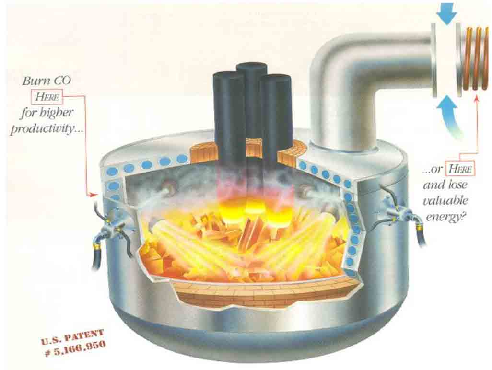
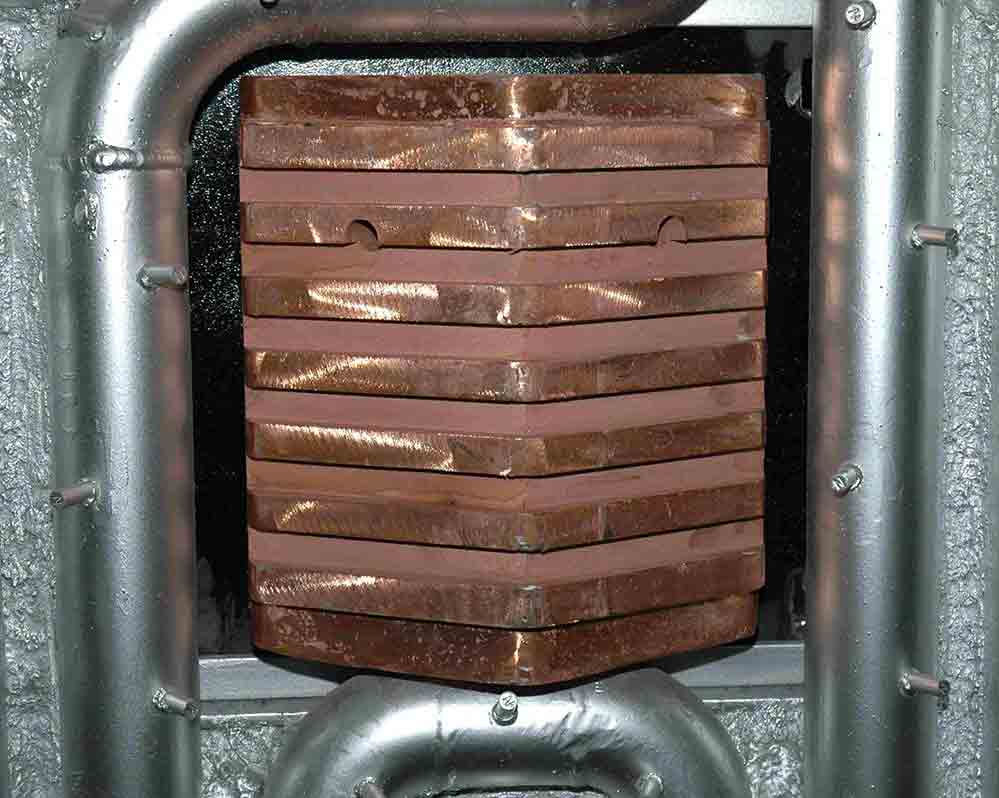
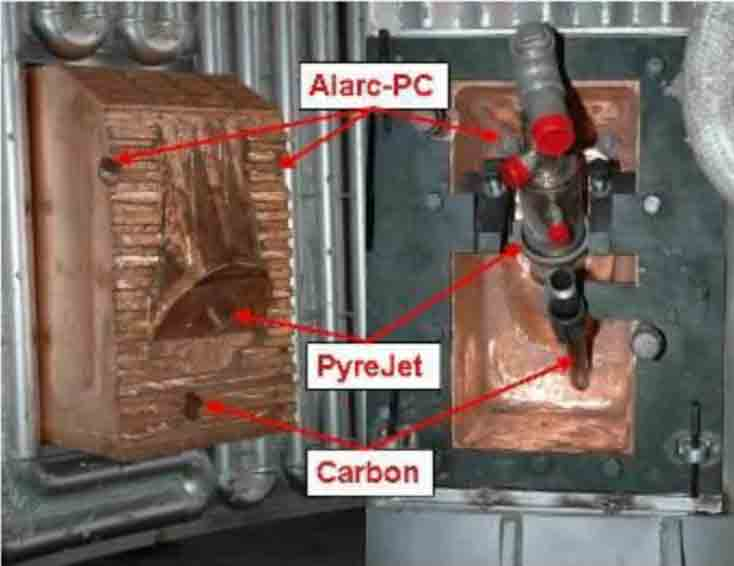

ACI’s patented low velocity oxygen injection for post combustion
Increased energy efficiency
- More efficient than burners using excess O2
- Much larger coverage (different angle than burners)
- Decreased velocity (does not affect electrodes)
- Reduced baghouse CO emissions & Temperature
- Adapted for molten Pig Iron operations (CO generation)


Most of ACI innovative panels are already integrating PC oxygen injection holes, allowing for an increased usage flexibility and lower maintenance costs.
- Reduced wall skulls
- Reduced cave-ins
- Up to 20 kWh/t energy savings
- >3 minute Power-On Time savings